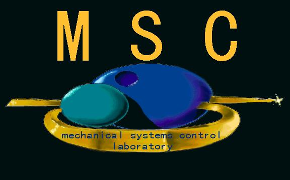
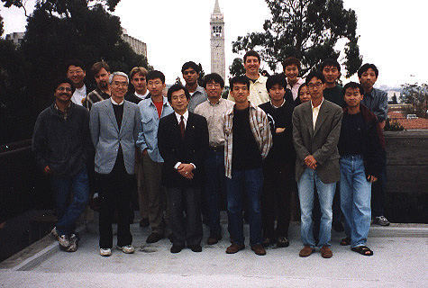

"Tomi" Group

Advisor: Masayoshi
Tomizuka ("Tomi")
Advanced Vehicle Control
Disk Drive Control
Motion Control
Paper Path Control in Xerox Machines
Visitors
[Home]
[Research]
[Publications/Theses] [Resources]

Comments to www@mechatro2.me.berkeley.edu